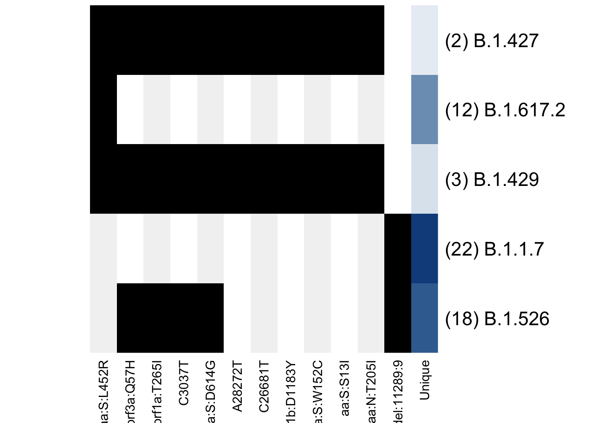
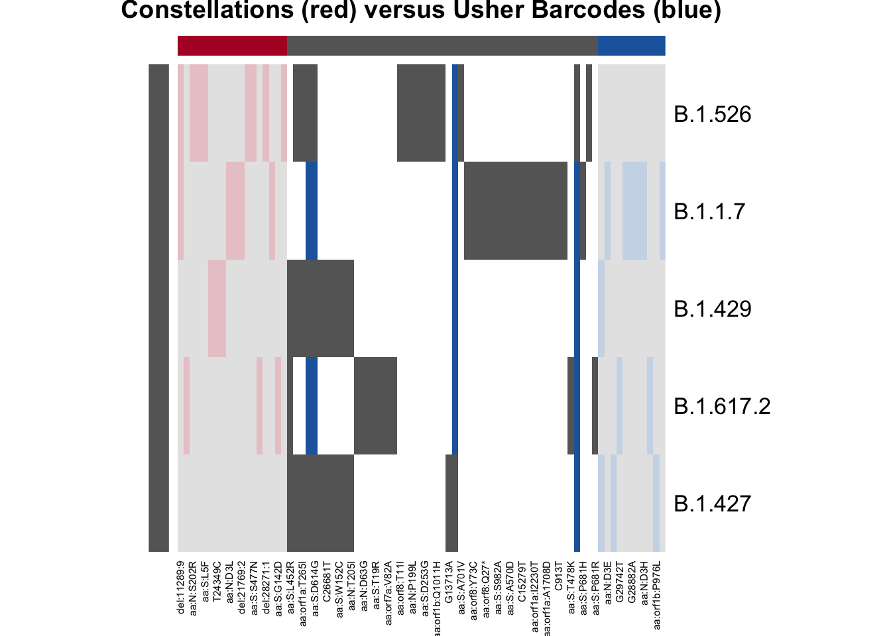
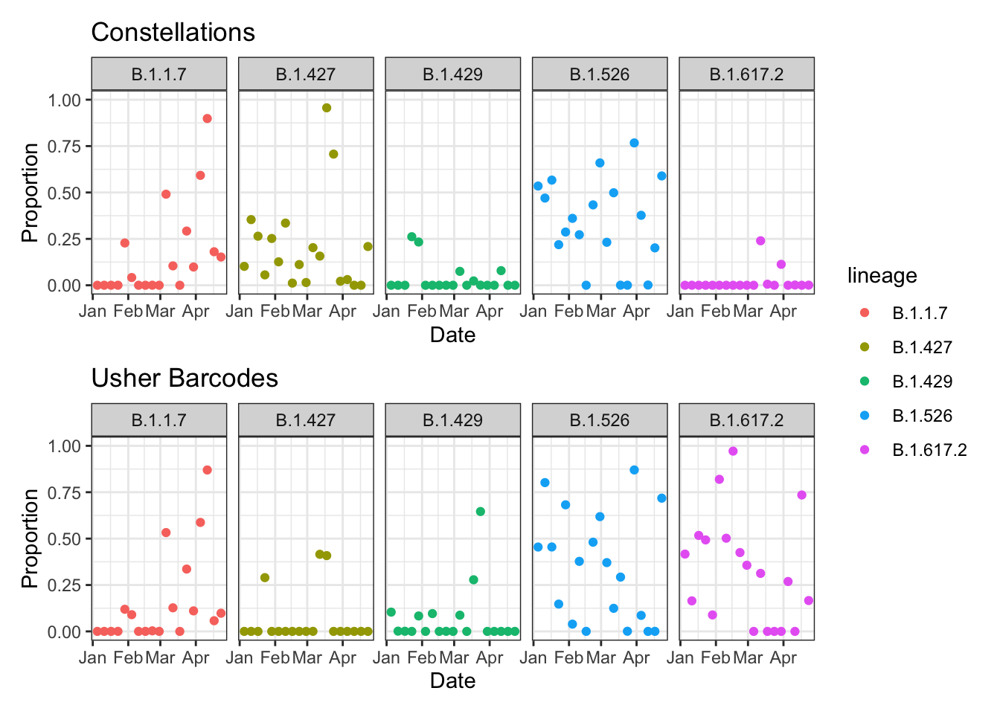
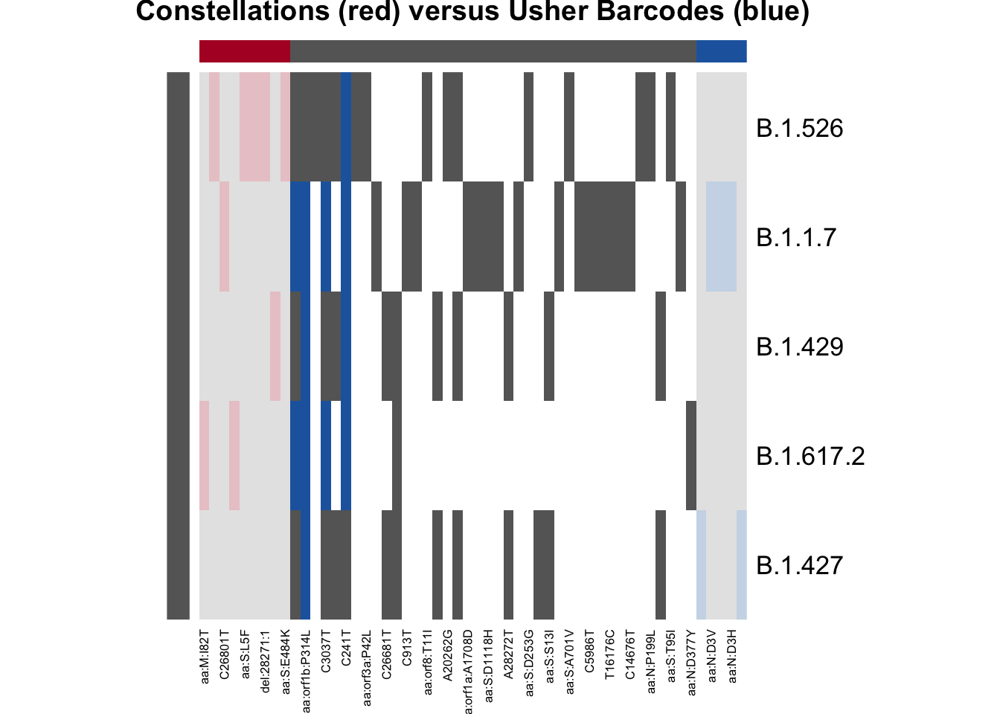
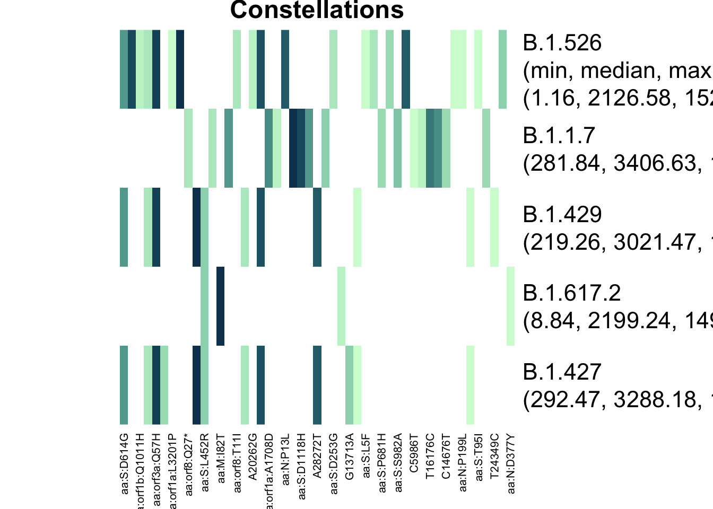
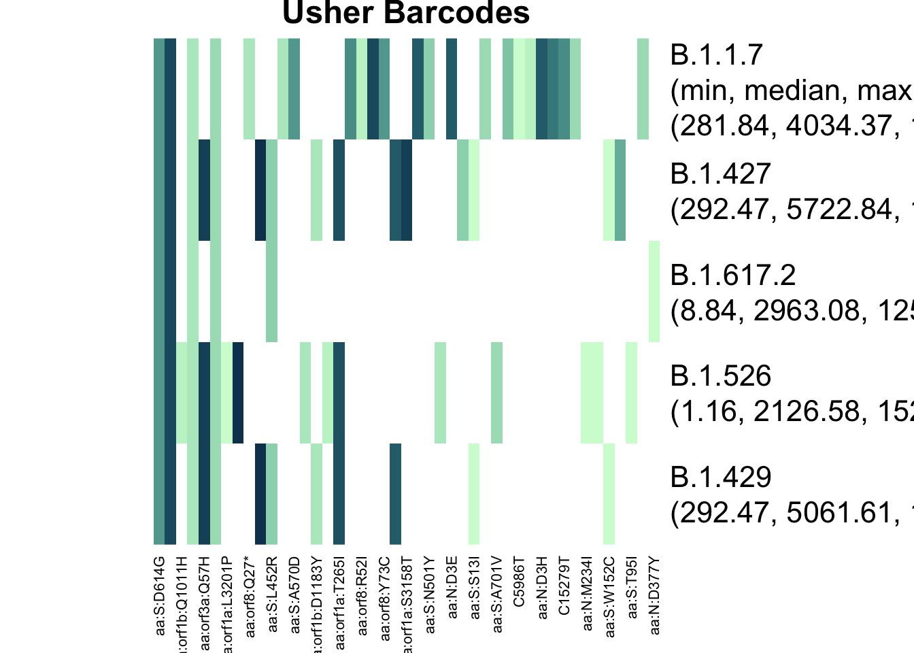
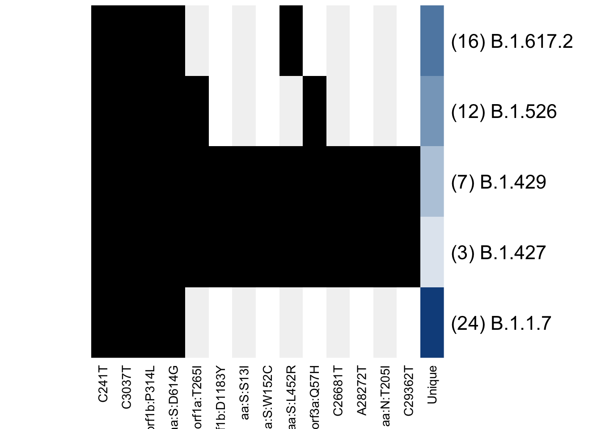
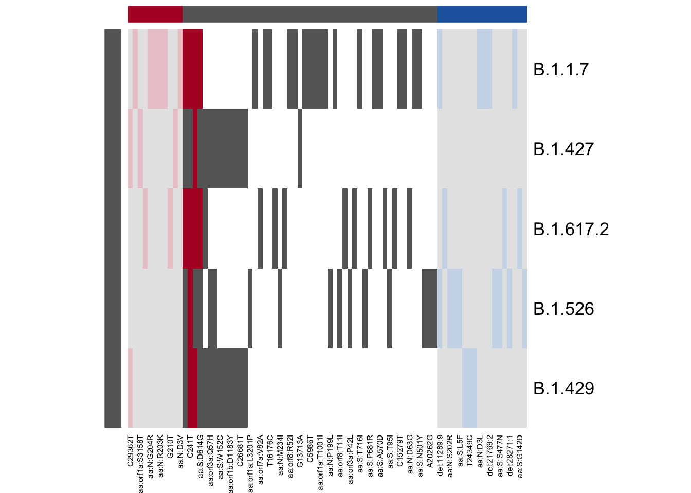
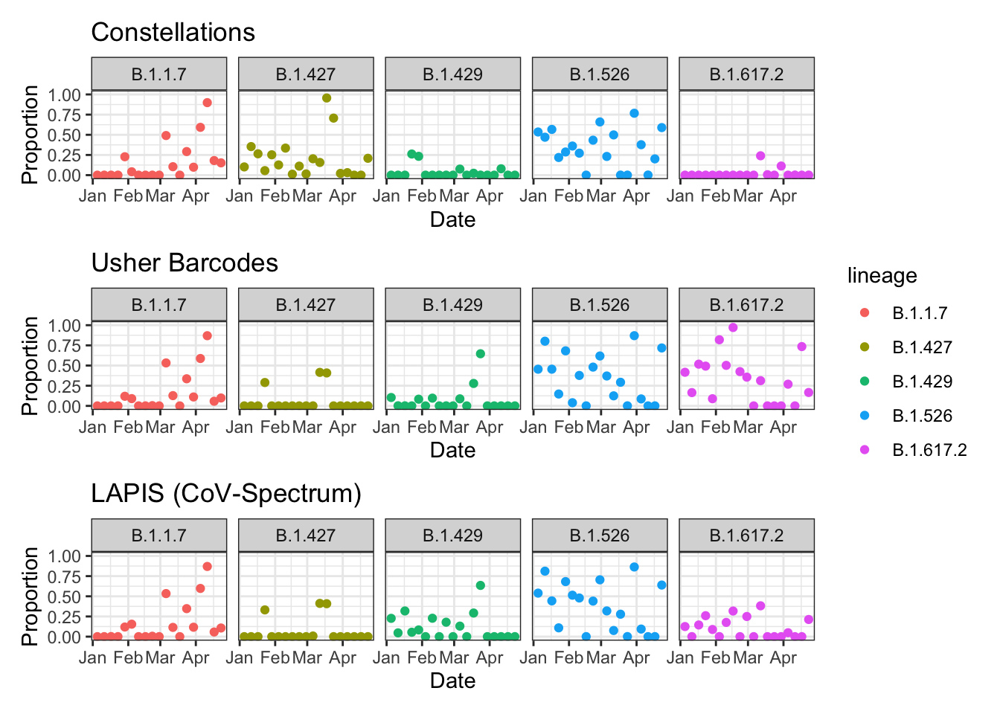
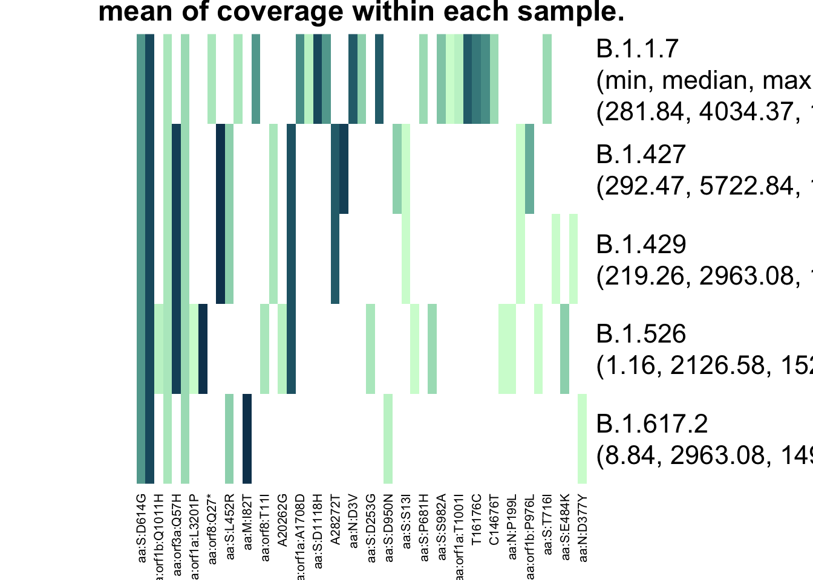

Lineage Definitions in ProVoC
Devan Becker
mutation_definitions.RmdIntroduction
This vignette demonstrates some different ways of defining and comparing lineage definitions, including a discussion of why it matters.
Data Prep
This package contains data from Baaijens et al. (2022), as downloaded from NCBI SRA and processed via a custom pipeline (heavily based on GromStole, with some post-processing).
In this paper, they explicitly look for B.1.1.7, B.1.427, B.1.429, and B.1.526. I’m going to add B.1.617.2 to this list, and take this list as given (another vignette will be written to test this assumption).
To make the code run faster, I’ll look at every third day of data.
#library(provoc)
devtools::load_all()## ℹ Loading provoc##
## Attaching package: 'lubridate'
##
## The following objects are masked from 'package:base':
##
## date, intersect, setdiff, union## here() starts at /Users/dbecker/git/DASL/provoc
data(Baaijens)
Baaijens$date <- ymd(Baaijens$date)
dates <- sort(unique(Baaijens$date))
dates3 <- (1:floor(length(dates) / 3)) * 3
dates <- dates[dates3]
b3 <- Baaijens[Baaijens$date %in% dates,
c("count", "coverage", "sra", "date", "label")]
b3$mutation <- parse_mutations(b3$label)
head(b3)## count coverage sra date label mutation
## 774 6404 16595 SRR15505103 2021-01-17 ~5700A aa:orf1a:A1812D
## 775 11407 12071 SRR15505103 2021-01-17 ~23401T aa:S:Q613H
## 776 12519 12661 SRR15505103 2021-01-17 ~23403G aa:S:D614G
## 777 20293 20794 SRR15505103 2021-01-17 ~14408T aa:orf1b:P314L
## 778 1885 3207 SRR15505103 2021-01-17 ~16500C aa:orf1b:Q1011H
## 779 4233 4265 SRR15505103 2021-01-17 ~3037T C3037TBuilt-in Constellation Files
The PANGO team used to maintain a GitHub repository called “Constellations” (“Cov-Lineages/Constellations” 2023), which contained mutations that were believed to be more-or-less unique to the lineages. This is no longer updated, but is useful for historical analyses.
This set of lineage definitions is available via the
astronomize() function.
astro <- astronomize() |>
filter_lineages(c("B.1.1.7", "B.1.427", "B.1.429", "B.1.526", "B.1.617.2"))
dim(astro)## [1] 5 69
astro[, 1:5]## aa:S:L452R aa:orf3a:Q57H aa:orf1a:T265I C3037T aa:S:D614G
## B.1.526 0 1 1 1 1
## B.1.1.7 0 0 0 0 0
## B.1.429 1 1 1 1 1
## B.1.617.2 1 0 0 0 0
## B.1.427 1 1 1 1 1In this matrix, the rows represent the lineages and the columns represent the mutations, with a 1 representing the presence of a mutation in a given lineage.
Notice the use of filter_lineages(). This function gets
the rows corresponding to the lineages, but it also ensures that we are
only dealing with columns that have at least one “1”. In other words, it
only uses mutations that are present in at least one lineage.
I have written a function to visualize this matrix:
plot_lineage_defs(astro)
Only the shared mutations are shown, with the last column indicating how many unique mutations remain in each definition. Every other mutation gets a grey background to make it easier to follow a mutation when the matrices are larger.
Usher Barcodes
The Freyja (Karthikeyan et al. 2022; “Andersen-Lab/Freyja” 2024) repository keeps an up-to-date barcodes file, which serves the same purpose as the definitions in constellations.
The usher_barcodes() function will check for this file,
then download it if it’s not present in a number of common locations.
It’s quite a large file, so I recommend storing the file and using the
filter_lineages() function.
bar <- provoc::usher_barcodes(path = "working") |>
filter_lineages(c("B.1.1.7", "B.1.427", "B.1.429", "B.1.526", "B.1.617.2"))
dim(bar)## [1] 5 62Constellations versus Barcodes
Let’s quickly look at the mutations present in astro but
not bar, then the mutations present in bar but
not astro, as well as mutations that are in both.
plot_lineage_defs2(astro, bar,
main = "Constellations (red) versus Usher Barcodes (blue)")
From this plot, we can see that there are quite a few mutations
defined in astro but not in bar. The blue bars
indicate that the mutation is used in the lineage definition in
bar but not astro; there are four mutations
defined in both B.1.1.7 and B.1.617.2 by usher barcodes that are not
present in the constellations file, and two of those mutations were also
present in B.1.429. The barcodes seem to be a little bit more lenient
about what mutations to include; constellations tried to get
more-or-less “unique” mutations.
Results
Since we chose lineages when choosing the lineage definitions, we can use the convenient “~ .” notation to fit the models with all lineages.
Note that the Baaijens data were processed in such a way that each sample contains the same mutations. This means that each bar you see below is based on the exact same set of mutations. This isn’t necessary, but I believe it improves the interpretability of the results.
library(ggplot2)
library(patchwork) # Patching ggplots together
res_astro <- provoc(count / coverage ~ .,
lineage_defs = astro,
data = b3, by = "sra")
res_astro$date <- ymd(res_astro$date)
res_bar <- provoc(count / coverage ~ .,
lineage_defs = bar,
data = b3, by = "sra")
res_bar$date <- ymd(res_bar$date)
gg_astro <- autoplot(res_astro, date_col = "date") +
labs(title = "Constellations")
gg_bar <- autoplot(res_bar, date_col = "date") +
labs(title = "Usher Barcodes")
gg_astro / gg_bar + plot_layout(guides = "collect") &
theme_bw() &
facet_wrap(~ lineage, nrow = 1)
Those are two very different looking plots! We saw before that the lineage definitions are different, but let’s check how they were actually used in the data. The same function can be used from before, which extracts the lineage definitions that were actually used (ignoring any mutations that were part of the definition but not present in the data).
plot_lineage_defs2(res_astro, res_bar,
main = "Constellations (red) versus Usher Barcodes (blue)")
From this result, we can see that constellations only used four mutations to define B.1.617.2! The barcodes used 6! This is because there were only 4 (or 6) mutations in B.1.617.2 that were also present in the data. Let’s dig a little deeper into this.
plot_actual_defs(res_astro, main = "Constellations")
plot_actual_defs(res_bar, main = "Usher Barcodes")
The two different matrices have very different definitions of B.1.617.2, and this explains the difference in results.
Furthermore, B.1.427 and B.1.429 had important differences - the barcodes have more mutations that overlap, meaning that the “de-mixing” algorithm must choose between one or the other. I’ll expand on this in a “Choosing Lineages to Search For” vignette.
LAPIS (CoV-Spectrum)
Since I have not managed to find where to get an API key, the mutations within each lineage were manually downloaded from cov-spectrum.org (Chen et al. 2022). I set the date range to go from 2020-01-01 to 2021-04-27, with the latter being the last sample in the Baaijens data.
The following code is very very hopefully going to change very soon.
An API key would be nice, and I desperately need better mutation
processing. It is, however, comforting that the column names match with
bar, so at least my parsing is consistent!
lineages <- c("B.1.1.7", "B.1.427", "B.1.429", "B.1.526", "B.1.617.2")
lapis_list <- lapply(lineages, function(x) {
file <- read.csv(here("working", paste0(x, ".csv")))
file$mutation[file$proportion > 0.8]
})
names(lapis_list) <- lineages
lapis <- lineage_defs_from_list(lapis_list)
# Avoiding parsing deletions, only looking at substitutions
lapis <- lapis[, !grepl("-", colnames(lapis))]
# TODO: user-friendly parsing
colnames(lapis) <- sapply(colnames(lapis), function(x) {
provoc:::parse_mutation(
type = "~",
pos = substr(x, 2, nchar(x) - 1),
alt = substr(x, nchar(x), nchar(x)))
})
plot_lineage_defs(lapis)
This looks a little different from before. There are 4 mutations that seem to be in every lineage, which doesn’t give the de-mixing algorithm any information about which lineages are present. B.1.1.7 seems to have a lot of unique mutations, which might make the results more accurate (if the mutations truly are unique to B.1.1.7).
Let’s quickly check how this compares to the barcodes:
plot_lineage_defs2(bar, astro)
There are a couple mutations in astro but not bar, and a couple in bar but not astro. This is to be expected. However, those red bars in the shared mutation section are noteworthy! They are the same four mutations that we saw in the plot before, which told us that the de-mixing algorithm will have a hard time differentiating the lineages. Let’s check the results.
res_lapis <- provoc(count / coverage ~ .,
lineage_defs = lapis,
data = b3, by = "sra")
res_lapis$date <- ymd(res_lapis$date)
gg_lapis <- autoplot(res_lapis, date_col = "date") +
labs(title = "LAPIS (CoV-Spectrum)")
gg_astro / gg_bar / gg_lapis + plot_layout(guides = "collect") &
theme_bw() &
facet_grid(~ lineage)
Usher Barcodes and Cov-Spectrum generally agree, but what’s going on with B.1.617.2??? It sort of looks like B.1.429 has taken some of the weight from B.1.617.2, but this is worth looking into. For example, did B.1.429 have mutations that are in B.1.617.2? From the comparison plot, there appear to be a lot of mutations that differentiate B.1.429 and B.1.617.2, so that can’t be it. Maybe it’s the coverage?
plot_actual_defs(res_lapis)
It doesn’t look like the mutations that differentiate B.1.617.2 and B.1.429 had low coverage. The minimum of the average coverages across samples1 isn’t low for the shared mutations.
I think the primary conclusion here is that the difference in mutations between the barcodes and the lapis definitions is important enough to the demixing algorithm to give the differences in results. Perhaps the next plotting function I make should show something about the frequencies of the mutations in each lineage.
Conclusion
Hopefully this vignette has successfully completed its two goals:
- Demonstrate some of the functionality of
provocwith lineage definitions. - Demonstrate the importance of choosing good lineage definitions!